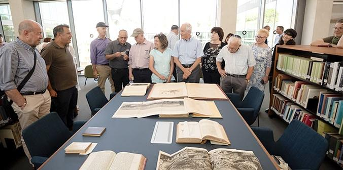
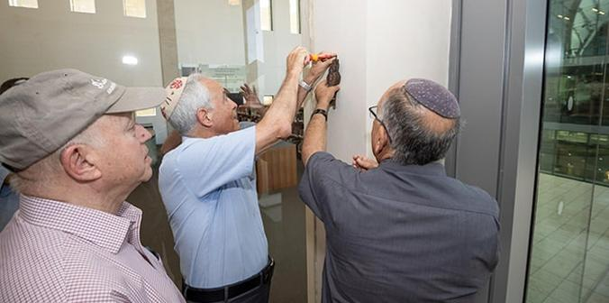

 Mandel leadership and staff view rare books in the library (Photo: Dafna Gazit)
The Jack, Joseph and Morton Mandel National Library for the Archaeology of Israel and the Jack, Joseph and Morton Mandel National Archaeological Archives were officially dedicated at a mezuzah-affixing ceremony that took place on July 16, 2023, at the new campus of the Israel Antiquities Authority in Jerusalem. The two Mandel facilities are part of the recently constructed Jay and Jeanie Schottenstein National Campus for the Archaeology of Israel in Jerusalem, which will serve as the Israel Antiquities Authority’s new headquarters and national center for education, research and conservation.
 The interior of the Jack, Joseph and Morton Mandel National Library for the Archaeology of Israel (Photo: Dafna Gazit)
The interior of the Jack, Joseph and Morton Mandel National Library for the Archaeology of Israel (Photo: Dafna Gazit)
The Library will house nearly 60,000 volumes, including 250 rare books and over 1,000 periodicals. The adjacent Archives will contain the Israel Antiquities Authority Archive and the British Mandatory Archive, as well as excavation reports, visual archives, maps, permits and plans. The Library and Archives will be the largest of their kind in the Middle East and will serve as a premiere research center for the archaeology and history of the Land of Israel. The library will be open to the public and the archival materials will be digitized and made available in a digital format.
 Professor Jehuda Reinharz and Eli Escusido affix a mezuzah, as Steve Hoffman looks on (Photo: Dafna Gazit)
At a modest ceremony,
Professor Jehuda Reinharz, president and CEO of the Mandel Foundation, affixed a mezuzah – a piece of parchment inscribed with verses from the Torah that is traditionally hung on the doorframe of a Jewish home – on the entrance to the Mandel Library.
Steve Hoffman, chairman of the Mandel Foundation, recited the Shehecheyanu blessing, which is traditionally said upon reaching momentous occasions in Jewish life.
“Culture is what sustains us as human beings,” said Professor Reinharz. “This is why the humanities are so important to us at Mandel. The first library in history was established some 5,000 years ago, not far from where we are standing, and humanity has always preserved its history. I am glad that the Mandel Foundation could make a contribution to this building. I am only sad that Mort Mandel couldn’t be here. When he was alive, we came here quite often and he saw the building in all of its configurations…. We are delighted to be partners with you in this very important endeavor.”
Book shelves and work spaces in the Jack, Joseph and Morton Mandel National Library for the Archaeology of Israel (Photo: Dafna Gazit)
Eli Escusido, director general of the Israel Antiquities Authority, said: "We are proud to stand here today, together with our dear partners from the Mandel Foundation, to affix the mezuzah at the entrance to the Mandel National Library for the Archaeology of Israel. Today we have completed a historic task that will serve the public for generations to come. The Library, the largest of its kind in the Middle East, will be a center for the preservation and collection of knowledge, study and research for students and researchers from all over the world. The hundreds of thousands of visitors to the campus will encounter this spectacular library immediately upon entering the complex. Thank you for your faith and partnership in making our vision a reality."
 (Left to right) Moshe Vigdor, director general of the Mandel Foundation–Israel; Eli Escusido, director general of the Israel Antiquities Authority; Professor Jehuda Reinharz, president and CEO of the Mandel Foundation; Steve Hoffman, chairman of the Board of the Mandel Foundation; and Sagi Melamed, chief development officer of the Israel Antiquities Authority (Photo: Dafna Gazit)
(Left to right) Moshe Vigdor, director general of the Mandel Foundation–Israel; Eli Escusido, director general of the Israel Antiquities Authority; Professor Jehuda Reinharz, president and CEO of the Mandel Foundation; Steve Hoffman, chairman of the Board of the Mandel Foundation; and Sagi Melamed, chief development officer of the Israel Antiquities Authority (Photo: Dafna Gazit)
Designed by renowned architect Moshe Safdie, the Jay and Jeanie Schottenstein National Campus for the Archaeology of Israel in Jerusalem will house nearly two million archaeological objects, among them 15,000 Dead Sea scrolls. It will include viewable conservation and restoration laboratories, an auditorium, special study galleries, an education and learning center, rooftop exhibition gardens, a café and more. The 36,000-square-meter campus, which is adjacent to the Israel Museum and the Bible Lands Museum, will be an open house for visitors from Israel and abroad, who will be able to see cultural treasures that were excavated in Israel and hear from the archaeologists and scientists who excavate, research and restore them.
-
Mandel leadership and staff view rare books in the library (Photo: Dafna Gazit) -
The interior of the Jack, Joseph and Morton Mandel National Library for the Archaeology of Israel (Photo: Dafna Gazit) -
Professor Jehuda Reinharz and Eli Escusido affix a mezuzah, as Steve Hoffman looks on (Photo: Dafna Gazit) -
Book shelves and work spaces in the Jack, Joseph and Morton Mandel National Library for the Archaeology of Israel (Photo: Dafna Gazit) -
(Left to right) Moshe Vigdor, director general of the Mandel Foundation–Israel; Eli Escusido, director general of the Israel Antiquities Authority; Professor Jehuda Reinharz, president and CEO of the Mandel Foundation; Steve Hoffman, chairman of the Board of the Mandel Foundation; and Sagi Melamed, chief development officer of the Israel Antiquities Authority (Photo: Dafna Gazit)
{kind=link}
{kind=link}
{kind=link}